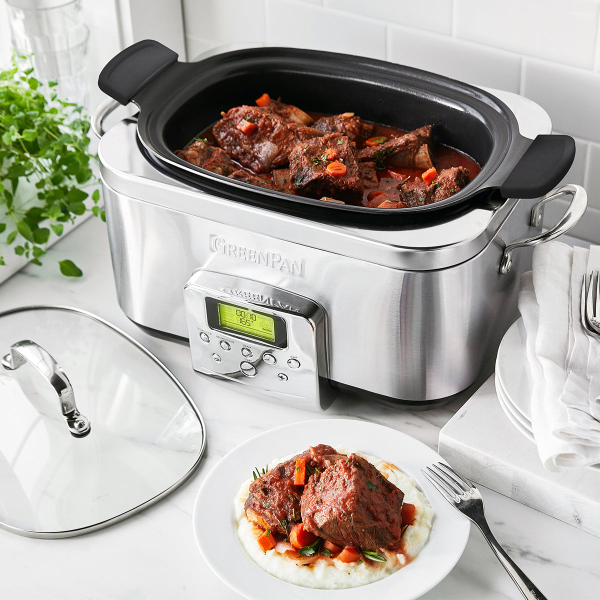

I'm a husband, father and mature student with a full-time job who finds time in short supply!
I want to get my degree and to be a great father to my daughter and husband to my wife
I also want to continue to see my football team and go to the gym three times a week but I don't want to sacrifice healthy meals, eaten together as a family to do so.
So how do I do that?
I admit, it's not some groundbreaking idea. There's nothing to download, no app, no quickfix. You still cook dinner What you don't do though is get home from work or the gym and think "I'm exhausted, I'm just going to stick a pizza in the oven Dinner is ready to be served once everyone is home. OK, tell me more
